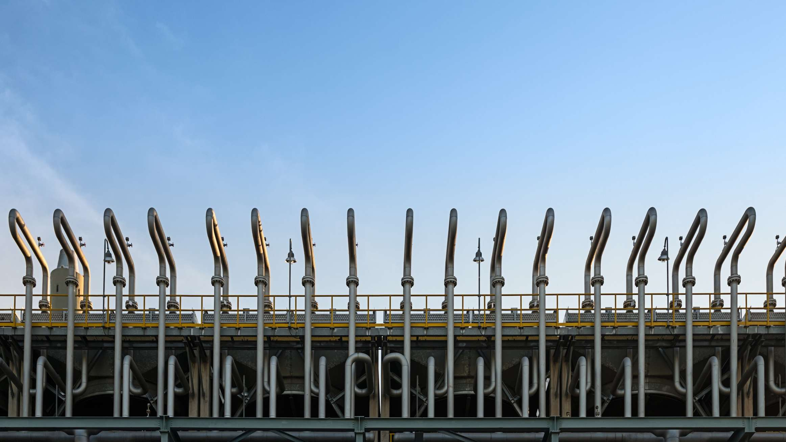
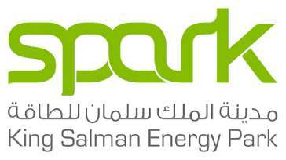
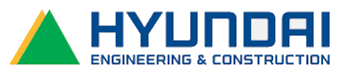

Ongoing · Yanbu
YASREF Yanbu
Alloy steel and flexible tie-in joint fabrication, piping and spool erection, testing, alignment, valve installation, fit-up, bolt torquing, lifting and pre-commissioning.

Integrated fabrication, erection, piping, civil and infrastructure solutions across Saudi Arabia and India, backed by skilled teams and practical engineering resources.
Founded in Kerala in 2017 and expanded into Saudi Arabia in 2023, Winloo delivers steel, piping, civil and infrastructure works with a 500+ skilled workforce and modern project resources.
Our Company ↗
Nine core service areas form the main contracting capability described in Winloo’s company profile.

Structural steel fabrication with CNC-supported production, quality checks and field-ready components.
Planning, lifting, alignment, bolting and welding for structural steel installation.

PEB solutions for warehouses, factories, showrooms and industrial facilities.
Fabricated and installed support systems for piping and industrial utilities.

Site preparation, excavation, concrete, roads, drainage and utility installations.

Steel and tensile shade systems for commercial, industrial and residential parking.
Alloy steel and flexible tie-in joint fabrication, piping and spool erection, testing, alignment, valve installation, fit-up, bolt torquing, lifting and pre-commissioning.
Gas-grid carbon-steel pipeline, underground HDPE potable and irrigation waterlines, testing, commissioning and related civil works.
Hot tapping on 56-inch and 42-inch lines, split tees, welding, hydrotesting, tie-in spools, bolt torquing and utility pipeline works.
Winloo’s profile lists an equipment fleet including cranes, welding machines, hydraulic lifts, concrete mixers and heavy-duty transport vehicles, supported by fabrication workshops with CNC and cutting machinery.
Winloo’s profile spans industrial, infrastructure and commercial sectors across a diverse project environment.


Winloo’s profile describes rigorous quality checks, personnel trained in occupational health and safety practices, and sustainable construction efforts including responsible sourcing, waste management and energy-efficient design.
Checks throughout project phases for compliance with local and international codes.
Occupational health and safety practices embedded in operational culture.
Responsible sourcing, waste management and energy-conscious design approaches.

Founded in Kerala, India, Winloo established its Saudi Arabia branch in 2023, extending steel erection, piping, civil and infrastructure capability into the Kingdom.
Send us your scope, drawings, BOQ or RFQ and our team will review your requirements.